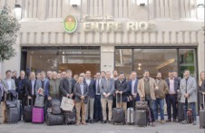
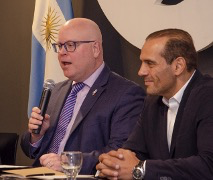
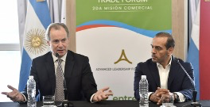
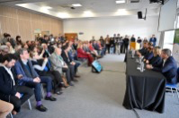
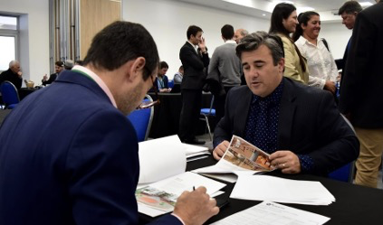
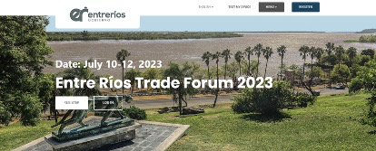
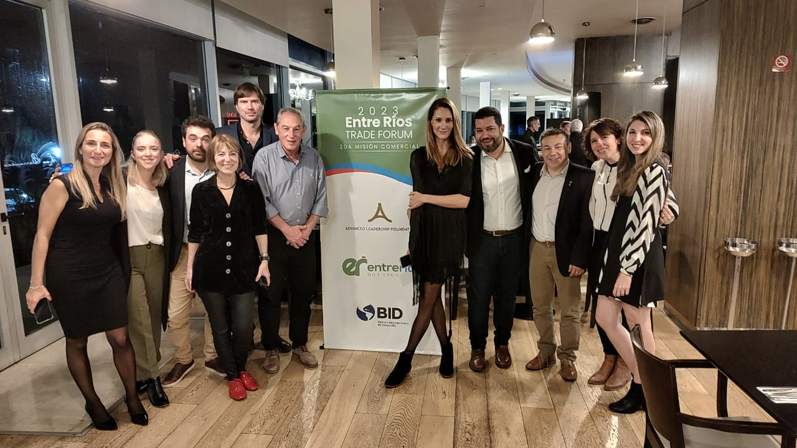
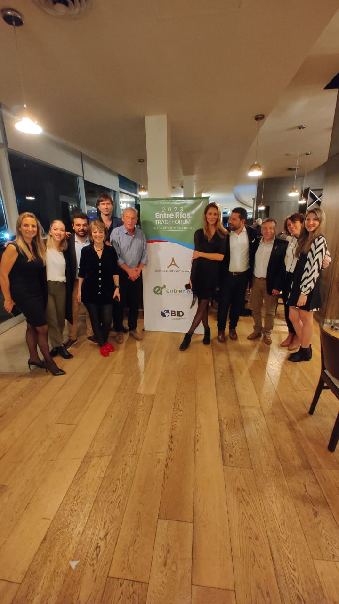
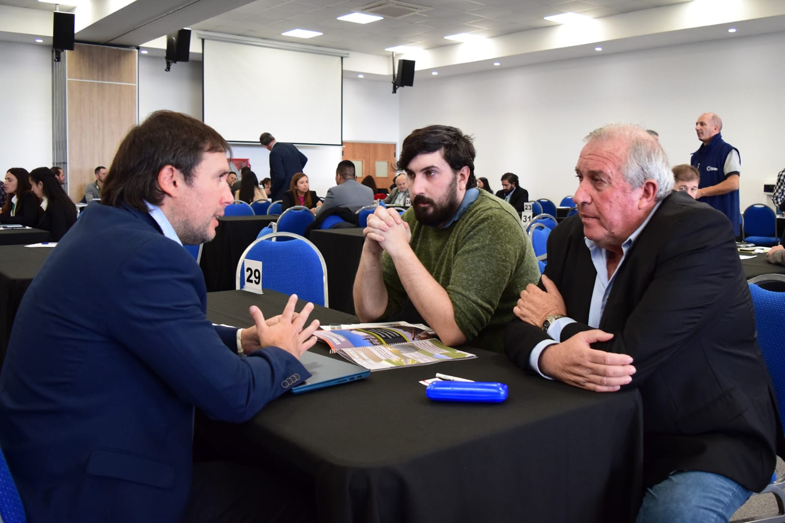

Overview
The province of Entre Ríos was the site of two major certified trade missions, organized in partnership with ALF and officially endorsed by the U.S. Department of Commerce. These missions positioned Entre Ríos as one of Argentina’s promising regions for U.S. investors, combining rich natural resources with strategic location and a diversified economy.
Strategic Positioning
Located between the Paraná and Uruguay rivers, Entre Ríos has logistical advantages, fertile lands and industrial capacity. ALF framed the province as a bridge between Argentina’s interior and global markets, highlighting agroindustry, renewable energy potential and tourism infrastructure.
Outcomes & Legacy
- Direct market access for local producers in poultry, citrus and wine.
- Exploratory opportunities in solar, biomass and renewable energy.
- Tourism partnerships around eco-tourism and cultural tourism.
- Institutional bridges linking provincial chambers with American business councils.
Why It Matters
The two missions in Entre Ríos exemplify ALF’s ability to create continuity and scale: first generating interest through an initial mission, then deepening impact through a follow-up edition.
Entre Ríos Certified Trade Missions in Pictures
A visual record of institutional meetings, business matchmaking sessions, sector briefings and networking moments that shaped the mission.








